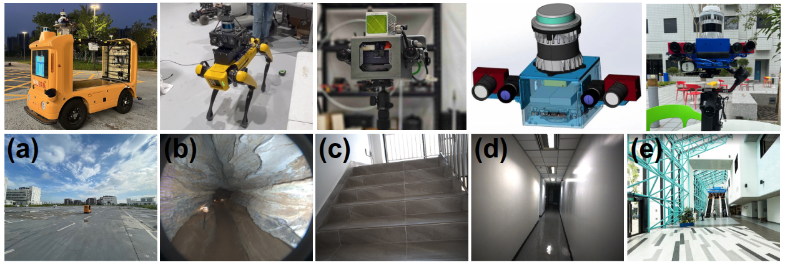

Overview
DCReg addresses degenerate LiDAR registration by explicitly separating rotation and translation
observability through Schur complements, characterizing the resulting weak directions in physical
coordinates, and applying a targeted preconditioned solve.
3core modules
2runnable executables
1repo-local default simulation
0Ceres / yaml-cpp / Open3D dependency on main

Three Core Modules
Module 1: Spectral Degeneracy Detection
Build the Schur complements for rotation and translation, inspect their spectra,
and measure coarse observability before any physical-axis interpretation.
Module 2: Physical-Axis Characterization
Align raw Schur eigenvectors to roll/pitch/yaw and x/y/z,
then report the weak mask, aligned eigenvalues, and axis contribution ratios.
Module 3: Preconditioned Solve
Clamp only the weak Schur eigenvalues and solve the normal equation with the resulting
targeted preconditioner.
Installation And Usage
Build
cd DCReg
mkdir -p build
cd build
cmake ..
cmake --build . -j8
Run
cd DCReg/build
./dcreg_minimal_example
./dcreg_runner
The default simulation case is repo-local and uses
DCReg/dataset/shifted_cylinder/measured_cloud_shifted_cylinder.pcd.
The parking-lot case remains available in code and can be enabled by editing the test case
definitions in DCReg/include/utils.hpp.
Current Outputs
| Executable |
Purpose |
Primary Output |
dcreg_minimal_example |
Module-by-module characterization demo |
Three-stage DCReg log |
dcreg_runner |
Full simulation runner |
Per-parameterization accuracy table |
Verified Results
Minimal Example Log
Synthetic DCReg example
[Module 1] Spectral degeneracy detection
cond_full: 1122.345689
cond_schur_rot: 36.087707
cond_schur_trans: 742.066396
[Module 2] Physical-axis degeneracy characterization
degenerate_mask: 001001
raw_lambda_rot: 1.001796 19.881966 36.152505
raw_lambda_trans: 0.032394 12.252030 24.038714
aligned_lambda_rpy: 36.152505 19.881966 1.001796
aligned_lambda_xyz: 24.038714 12.252030 0.032394
...
[Module 3] Preconditioned linear solve
preconditioned_delta: 0.190398 -0.306306 -2.620922 0.095321 -0.515479 41.997563
pcg_iterations: 6
pcg_relative_residual: 0.000000
qr_fallback: 0
Validated Simulation Table
| Parameterization |
Iter |
RMSE |
Fitness |
Trans. Error (m) |
Rot. Error (deg) |
LinIt |
QRfb |
| Euler | 9 | 0.0314988 | 0.116239 | 0.0258485 | 0.0516469 | 6 | 0 |
| SE3 | 10 | 0.0315708 | 0.116636 | 0.0271197 | 0.0507196 | 6 | 0 |
| SO3 | 10 | 0.0315708 | 0.116636 | 0.0271196 | 0.0507195 | 6 | 0 |
| Quaternion | 10 | 0.0315708 | 0.116636 | 0.0271196 | 0.0507195 | 6 | 0 |
Demo Gallery
Technical Insights
Branches And Documentation
| Branch / Folder |
Description |
main | Full public DCReg implementation |
baseline | Historical public release |
wiki/ | Bilingual GitHub Wiki source pages |
docs/wiki/ | GitHub-Pages-ready tabbed bilingual documentation |